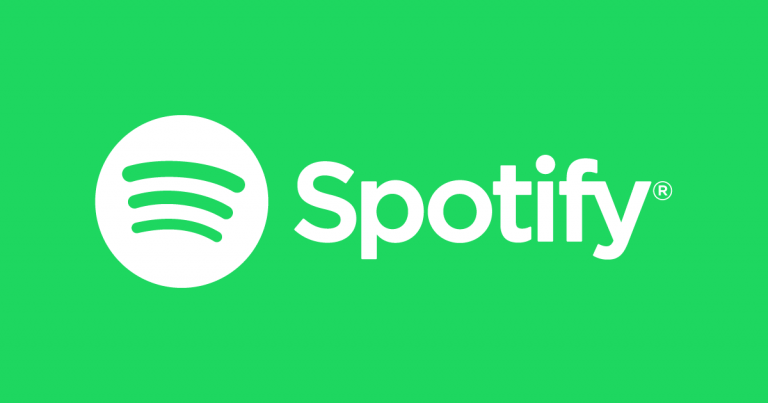

Esta web es muy conocida debido al servicio que ofrece para poder escuchar música, podcasts o incluso vídeos de manera digital. Además,
da acceso a millones de canciones y contenido de creadores a lo largo de todo el mundo.
Aunque no lo parezca, Spotify puede resultar unas PWA. Esta tiene un muy buen rendimiento y ocupa mucho menos espacio tanto en
la pantalla de inicio del aparato como en el disco duro o en la memoria. Para instalar esta Aplicación Web Progresiva, solo es necesario acceder al link,
pulsar el botón de instalar y, gracias a ello, la aplicación mostrará un acceso directo al escritorio.
Otra web muy conocida es Telegram, uno de los pocos servicios de mensajería que ha apostado por una PWA y al que le ha ido genial.
Los usuarios que tienen Telegram no notan la diferencia para nada de esta aplicación en su formato web progresivo que en su formato app nativa y
eso es una ventaja bastante importante. Difusiones, foros, envío de archivos, llamadas, chat, todo sigue intacto y muy funcional.